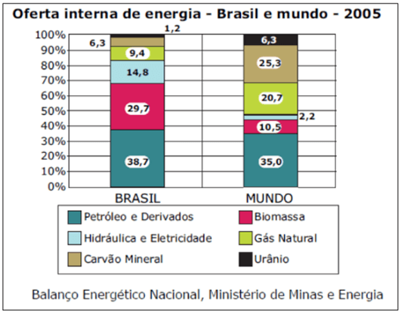
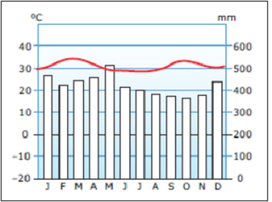
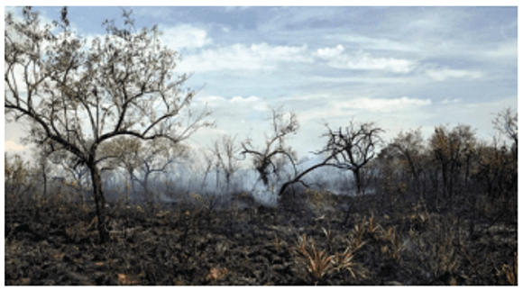
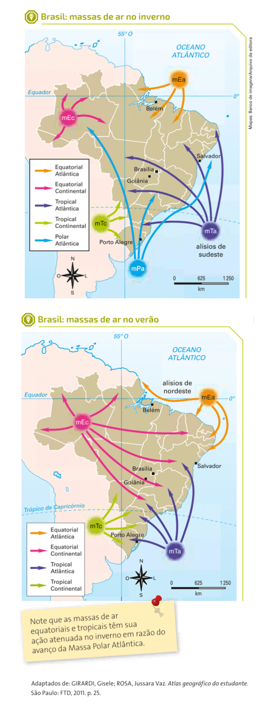
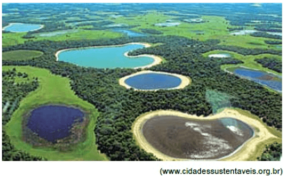

Conteúdo:
Questão 01
(FUVEST 2009) Observe o gráfico a seguir.

Com base nos seus conhecimentos e no gráfico, assinale a alternativa CORRETA.
a) A maior parte da oferta de energia no Brasil é proveniente de fontes renováveis, com reduzida participação dos combustíveis fósseis.
b) A participação dos combustíveis provenientes de fontes renováveis é mais expressiva no restante do mundo do que no Brasil.
c) A participação das fontes renováveis é majoritária mundialmente, com destaque para a biomassa e a hidreletricidade.
d) A participação do carvão mineral na oferta interna de energia do Brasil é maior do que no restante do mundo.
e) Os combustíveis fósseis representam mais de 50% da oferta de energia, tanto no Brasil quanto no mundo.
Questão 02
(UFPE) Leia com atenção o texto a seguir e observe o climograma:
“Esses climas não conhecem a estação fria, pois a mais baixa temperatura no mês menos quente não desce abaixo de 18ºC. Não apresentam estação seca e os índices pluviométricos anuais superam os 2.000mm. As amplitudes térmicas anuais, nas áreas onde predominam, são insignificantes, mas os valores de umidade relativa do ar apresentam-se, durante todo o ano, muito elevados”.

Em relação ao enunciado acima, é correto afirmar que o clima é:
a) subtropical.
b) tropical de altitude.
c) equatorial.
d) tropical.
e) mesotérmico úmido.
Questão 03
(URCA 2017) De acordo com a influência de massas de ar, podemos dividir o território brasileiro em cinco principais tipos climáticos. Relacione a 2ª coluna de acordo com a 1ª e indique a alternativa correta:
I. Clima Equatorial Úmido
II. Clima Litorâneo Úmido
III. Clima Tropical Alternadamente Úmido e Seco
IV. Clima Tropical tendendo a Seco ou Semiárido
V. Clima Subtropical Úmido.
( ) É um tipo de clima tropical, portanto quente, com médias anuais de pluviosidade geralmente inferiores a 1.000mm. As chuvas se concentram num período curto como no interior do Estado da Paraíba, por exemplo.
( ) As médias pluviométricas oscilam entre 1.500 e 2.000 mm/ano; abrangendo a porção do território brasileiro próxima ao litoral, desde o Rio Grande do Norte até a parte setentrional do Estado de São Paulo.
( ) Abrange a porção do território brasileiro localizada ao sul do Trópico de Capricórnio; é o tipo de clima classificado como “mesotérmico”, isto é, de temperaturas médias.
( ) Abrange a Amazônia brasileira; quente e úmido, da convergência dos alísios.
( ) É um clima tropical típico, quente e semiúmido com uma estação chuvosa (verão) e outra seca (inverno). Abrange Mato Grosso do Sul, Minas Gerais, trechos da Bahia e do Ceará, Maranhão e Piauí.
a) IV; II; V; I; III.
b) II; V; IV; III; I.
c) III; IV; I; V; II.
d) IV; V; I; III; II.
e) III; V; IV; II; I.
Questão 04
(ENEM 2016) A vegetação apresenta adaptações ao ambiente, como plantas arbóreas e arbustivas com raízes que se expandem horizontalmente, permitindo forte ancoragem no substrato lamacento; raízes que se expandem verticalmente, por causa da baixa oxigenação do substrato; folhas que têm glândulas para eliminar o excesso de sais; folhas que podem apresentar cutícula espessa para reduzir a perda de água por evaporação. As características descritas referem-se a plantas adaptadas ao bioma:
a) Cerrado.
b) Pampas.
c) Pantanal.
d) Manguezal.
e) Mata de Cocais.
Comentário:
Bioma caracterizado pelo solo lamacento, com baixa oxigenação, no qual as raízes apresentam pneumatóforos para captação do gás. Por estar localizado na região costeira, a salinidade da água exige da vegetação glândulas nas folhas para eliminação do excesso de sais.
Questão 05
(FUVEST 2022)
“Uma forma de conservação do Cerrado é a prática de queimadas controladas que simulam o ciclo natural do fogo. Observe a imagem que retrata os efeitos visuais de uma queimada controlada em um trecho de Cerrado da Estação Ecológica de Santa Bárbara, no interior do estado de São Paulo.

Nessa área foram conduzidos experimentos com queimadas controladas, e os resultados sugerem que essa prática é benéfica para a flora, cujas plantas rebrotam rapidamente depois da passagem do fogo. Nos grupos vegetais em que as queimadas produziram mais efeitos positivos foi registrado até um discreto aumento de espécies vegetais. Antes das queimadas, os pesquisadores contabilizaram 38 espécies de gramíneas e 68 de outras ervas. Depois, esses números subiram para 44 e 74, respectivamente ”.
Durigan G et al. (2020), Front. For. Glob. Change, 3:13, doi:10.3389/ffgc.2020.00013. Adaptado.
No bioma Cerrado, de acordo com a informação do texto, a prática de queimadas controladas
a) contribui para a manutenção da biodiversidade local.
b) constitui uma técnica de ponta para o plantio agrícola.
c) é uma técnica tradicional denominada agricultura itinerante.
d) tem como objetivo permitir a pecuária extensiva.
e) apresenta desvantagem em termos de ganho para a flora.
Segundo as informações do enunciado, a prática de queimadas controladas pode contribuir para a manutenção da biodiversidade do Cerrado e, até mesmo, provocar um aumento discreto de espécies vegetais. A rebrota de algumas espécies do Cerrado depende da ação do fogo que ocorre naturalmente em sua área de abrangência no território nacional, onde predomina o clima tropical marcado por severos períodos de estiagem durante o inverno.
Questão 06
(ENEM 2015)
“Tanto potencial poderia ter ficado pelo caminho, se não fosse o reforço em tecnologia que um gaúcho buscou. Há pouco mais de oito anos, ele usava o bico da botina para cavoucar a terra e descobrir o nível de umidade do solo, na tentativa de saber o momento ideal para acionar os pivôs de irrigação. Até que conheceu uma estação meteorológica que, instalada na propriedade, ajuda a determinar a quantidade de água de que a planta necessita.
Assim, quando inicia um plantio, o agricultor já entra no site do sistema e cadastra a área, o pivô, a cultura, o sistema de plantio, o espaçamento entre linhas e o número de plantas, para então receber recomendações diretamente dos técnicos da universidade”.
CAETANO, M. O valor de cada gota. Globo Rural, n. 312, out. 2011.
A implementação das tecnologias mencionadas no texto garante o avanço do processo de
a) monitoramento da produção.
b) valorização do preço da terra.
c) correção dos fatores climáticos.
d) divisão de tarefas na propriedade.
e) estabilização da fertilidade do solo.
A tecnologia hoje disponível permite aos agricultores um monitoramento cada vez maior da produção agrícola, tornando a atividade cada vez mais independente das variações ambientais.
a) Correta. A introdução de novas tecnologias no campo promove a adequação das etapas produtivas a processos que as otimizam, reforçando a expansão de uma agricultura científica globalizada que confere racionalidade e aumento da produtividade à atividade agrícola moderna.
b) Incorreta. O texto não faz menção ao aspecto econômico de valorização fundiária no campo, mas a elementos técnicos vinculados à produção.
c) Incorreta. Embora irrigação seja um processo utilizado para corrigir a ausência de umidade dos solos, o tema principal que o texto aborda vincula-se à implementação de tecnologias no campo e às mudanças que isso ocasiona.
d) Incorreta. A divisão do trabalho na propriedade agrícola tecnificada tem sido restrita pelo uso de tecnologias automatizadas capazes de centralizar cada vez mais o controle de todas as etapas da produção.
e) Incorreta. O excerto apresentado fala da vulnerabilidade dos solos associada à variação dos níveis de umidade, sujeitos a medições para estabelecer a quantidade de água de que a planta necessita além de abordar como os elementos técnicos podem contribui para estabelecer os objetivos produtos pretendidos. Portanto, não há certeza sobrea estabilidade da influência dos elementos naturais na atividade agrícola, tampouco se menciona o `fator fertilidade dos solos no âmbito da questão.
Questão 07
(ENEM 2018) A presunção de que a superfície das chapadas e chapadões representa uma velha peneplanície é corroborada pelo fato de que ela é coberta por acumulações superficiais, tais como massas de areia, camadas de cascalhos e seixos e pela ocorrência generalizada de concreções ferruginosas que formam uma crosta laterítica, denominada “canga”.
WEIBEL, L. Disponível em: http://biblioteca.ibge.gov.br. Acesso em: 8 jul. 2015 (adaptado).
Qual tipo climático favorece o processo de alteração do solo descrito no texto?
a) Árido, com déficit hídrico.
b) Subtropical, com baixas temperaturas.
c) Temperado, com invernos frios e secos.
d) Tropical, com sazonalidade das chuvas.
e) Equatorial, com pluviosidade abundante.
A região descrita no texto apresenta características típicas da região central do País, na qual se destaca o intenso processo erosivo. Nestas regiões, predominam o ambiente tropical típico, com chuvas concentradas no verão.
a) Incorreto. Nessa alternativa, o clima árido não permite a sazonalidade chuvosa necessária à formação do processo de laterização.
b) Incorreto. O clima subtropical não traz as condições necessárias à formação de cangas e do solo proposto no enunciado devido ao menor volume de chuvas e ausência de sazonalidade.
c) Incorreto. O clima Temperado, apesar de ser sazonal, não traz o volume de chuvas necessário e nem as condições necessárias à formação de cangas e do solo proposto no enunciado.
d) Correto. O clima tropical traz perfeitamente as condições necessárias à formação de cangas e do solo proposto no enunciado, pois tem sazonalidade contribuindo tanto para o processo erosivo quanto para o processo de laterização.
e) Incorreto. Sempre deve haver sazonalidade hídrica para haver laterização, e chuvas constantes não trazem essas condições.
Questão 08
(UFES) Para responder a esta questão, analise a figura abaixo.

Qual a alternativa que não descreve os movimentos das massas de ar que atuam no território brasileiro?
a) No Inverno, a Massa Polar Atlântica pode penetrar no território brasileiro até as imediações do norte do País, mas não provoca queda na temperatura, já que esta região está sob domínio da Massa Equatorial Continental, quente e úmida.
b) A Massa de ar Equatorial tem sua função atenuada durante o Inverno, devido ao avanço das massas polares.
c) No Brasil predominam os climas quentes e úmidos, uma vez que este país possui 92% de seu território na zona intertropical do planeta, sob forte influência das massas de ar oceânicas.
d) A Massa Equatorial Continental, a despeito de se originar sobre o continente Sul-Americano, é quente e úmida.
e) Durante o Inverno, a Massa Equatorial Atlântica tem sua atuação restringida devido ao avanço da Massa Tropical Atlântica, que se desloca em função do avanço da Massa Polar Atlântica.
Embora a região Norte do país permaneça sob a influência da Massa Equatorial Continental, é comum que no inverno a Massa de ar Polar avance sobre o interior do país, provocando redução das temperaturas em todas as regiões. Quando esse fenômeno acontece na região Norte, ele recebe o nome de friagem.
Questão 09
(FAMP 2019) Domínio morfoclimático foi um conceito usado por Aziz Nacib Ab’Saber e representa a combinação de uma série de elementos atuais como relevos, climas, vegetações, solos e hidrografias. As interações desses elementos formam as unidades paisagísticas. Dessa forma, o segundo maior domínio morfoclimático do Brasil é formado por áreas relativamente planas, de clima que apresenta inverno seco e verão bastante chuvoso, além de espécies vegetais com gramíneas, arbustos e árvores que apresentam folhas endurecidas, galhos tortuosos e cascas grossas. Esse domínio é conhecido com o nome de:
b) Caatinga.
c) Floresta Amazônica.
d) Mata dos Cocais.
Questão 10
(UNIVESP 2018) Uma característica do bioma do Pantanal em destaque na imagem é a presença de

a) dobramentos modernos.
b) mares de morros.
c) vegetação xerófita.
d) depressões interplanálticas.
e) terras periodicamente alagáveis.